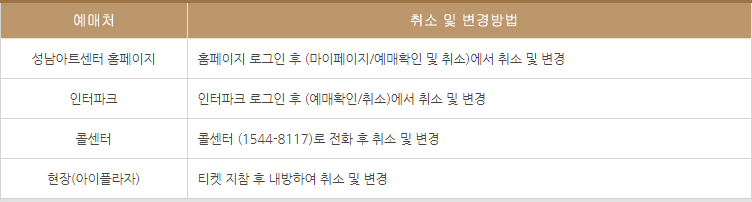
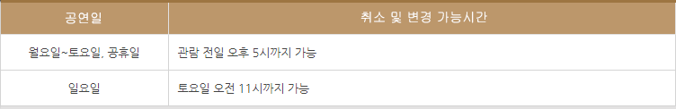

■ 예매
▩ 인터넷 예매 (PC웹에서 예매가 가능)
▶ 예매시간 : 24시간 예매 가능 (공연 2시간 전까지 인터넷예매 가능)
▶ 예매방법 : 회원가입 및 로그인 → 공연선택 → 예매날짜/시간/좌석선택 → 결제방법선택/결제/예매완료
예매방법 자세히 보기
▶ 예매수수료 : 성남아트센터 홈페이지를 통하여 예매하시면 수수료는 부과되지 않습니다.
▶ 결제방법
- 신용카드결제 : 신용카드로 결제하시면 바로 결제가 완료됩니다.
- 무통장 입금 : 무통장 입금으로 결제하시면 가상계좌가 생성됩니다.
;이는 예매건 별로 생성되는 가상계좌번호이며 정확한 금액을 입금하셔야 결제가 완료됩니다.
(입금자명과 예매자명이 달라도 문제 없음)
가상계좌번호는 예매 익일 23시 59분까지 존재하며 그 이후에는 입금이 불가능합니다.(주말, 공휴일도 동일)
공연일이 4일 남았을 시 무통장입금으로 결제할 수 있습니다.
▩ 전화예매
▶ 전화번호 : 1544-8117
▶ 예매시간 : 09:00~18:00(점심시간 12:00~13:00 미운영)
▶ 예매 방법 : 1544-8117
▶ 예매수수료 : 장당 1,000원 (성남아트센터 유료회원은 예매수수료 면제)
▶결제방법 : 신용카드, 무통장입금 결제 가능
▩ 현장예매
▶ 예매시간 : 월 09:00~18:00 / 화~일 09:00~21:00 (휴무 시 사전 공지)
▶ 예매 방법 : 성남아트센터 아이플라자(종합안내소)로 방문하시면 바로 예매할 수 있습니다.
(공연 시작 1시간 30분 전부터는 해당 공연장 1층 매표소에서 가능)
▶ 예매수수료 : 없음
▶ 결제방법 : 신용카드, 현금 결제 가능
▶ 운영시간 : 월 09:00~18:00 / 화~일 09:00~21:00 (휴무 시 사전 공지)
▶ 위치 : 오페라하우스 광장 아이플라자
▶ 문의번호 : 031-783-8000
■ 취소/환불
▩ 예매취소 및 변경방법

모든 취소 및 변경은 예매하신 예매처에서 가능합니다.
▩ 예매취소 및 변경 가능시간

공연 당일에는 취소 및 변경이 불가능합니다.
▩ 취소수수료 (소비자분쟁해결 보상기준에 따름)
▶ 1. 예매 후 7일까지 취소 시에는 취소수수료가 없습니다.
▶ 2. 관람일 기준은 아래 기준으로 취소수수료가 적용됩니다.
(1번과 2번에 모두 해당하는 경우, 2번 기준이 우선 적용)
▷ 관람일 10일 전까지: 뮤지컬, 콘서트, 클래식, 무용 한 장당 4,000원, 그 외 장르 한 장당 2,000원
(단, 최대 티켓금액의 10% 한도)
▷ 관람일 9일 전~관람일 7일 전까지 : 티켓금액의 10%
▷ 관람일 6일 전~관람일 3일 전까지 : 티켓금액의 20%
▷ 관람일 2일 전~관람일 1일 전까지 : 티켓금액의 30%
위 2번의 경우 예매 당일 밤 12시 이전 취소시에는 취소수수료가 없습니다.(단, 취소기간 내에 한함)
▶ 3. 성남아트센터 유료회원은 기획공연에 한하여 취소수수료를 부과하지 않습니다.
▩ 주의사항
▶모든 할인은 관람자를 기준으로 합니다.
▶ 예매티켓 변경은 기존 예매티켓 취소 후 재예매의 방식으로 이루어집니다.
▶ 예매티켓 변경 시 기존 예매티켓 금액보다 적은 금액으로 결제될 경우(부분취소, 하향등급선택 등) 취소
수수료가 부가됩니다.
▶ 무통장 입금으로 결제 한 경우 취소 수수료를 제외한 금액이 환급됩니다.(송금수수료 미부과)
▶ 무통장 입금으로 결제 한 경우 예매자 명과 동일한 명의의 계좌를 입력하셔야 합니다.
▶ 티켓을 이미 배송으로 수령하신 경우에는 인터넷 및 전화로 취소할 수 없습니다.
▶ 반드시 취소마감 시간 전에 티켓이 인터파크 고객서비스센터로 반송되어야 취소 가능하며, 취소수수료는 도착일자
기준으로 부과됩니다. (단, 일괄배송 취소에 대한 자세한 문의는 콜센터(1544-8117)로 문의해주시기 바랍니다.)
■ 티켓 수령
▩ 현장수령
▶ 예매티켓 현장 수령은 성남아트센터 아이플라자(종합안내소)로 방문하시면 수령이 가능하며, 예매자 신분증과
예매번호를 꼭 지참하셔야 합니다.
(단, 성남아트센터 홈페이지/콜센터/인터파크를 제외한 타 예매처 시 공연 시작 1시간 30분 전부터 해당)
▶ 공연장 1층 매표소에서 수령 가능합니다. 기획사, 쿠팡, 옥션, 문화바우처, 클립서비스 등)
공연 시작 1시간 30분 전부터 해당 공연장 1층 매표소에서 수령 가능합니다.
▶ 티켓 수령자와 예매자가 달라도 티켓 수령이 가능하나, 할인을 받아 예매하셨을 때 관람하실 분께서 증빙자료를 지참하시고
직접 방문하셔야 티켓 수령이 가능합니다. (ex. 장애인 할인, 국가유공자 할인)
▩ 배송
▶인터넷 및 전화예매 시 우편배송으로 티켓을 수령하실 수 있습니다.
▶ 우편배송(2,500원) : 결재완료 후 3~4일 이내 배송됩니다. (공연일 14일 전까지만 가능)
▶ 배송신청 후 현장수령으로 변경 시 배송료는 환불되지 않습니다.